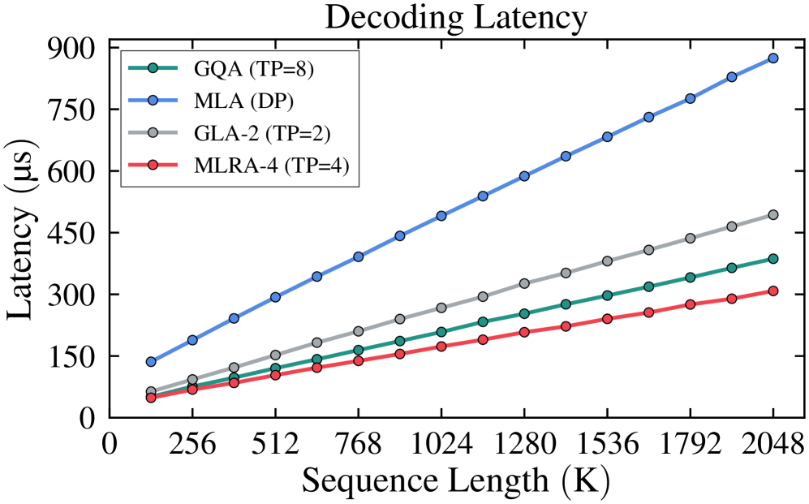

Why it matters왜 중요한가
Long-context decoding is memory-bound — and MLA, the best cache compressor, breaks exactly where you need it most: multi-GPU serving.
긴 컨텍스트 디코딩은 메모리 병목이다 — 그런데 최고의 캐시 압축기 MLA는 가장 필요한 지점, 즉 다중 GPU 서빙에서 무너진다.
During decoding, the KV cache is reloaded from HBM at every step, so data movement, not compute, dominates latency for long contexts (RAG, long chain-of-thought). MLA compresses the total cache beautifully — but its single latent head can't be sharded. Under tensor parallelism, FlashMLA distributes the up-projections by head, yet each device still reloads the entire latent cache (4.5 dh per token, regardless of how many GPUs). MLRA's question: can we keep MLA's tiny cache and split it cleanly across devices?
디코딩 중 KV 캐시는 매 스텝 HBM에서 다시 로드되므로, 긴 컨텍스트(RAG, 긴 사고사슬)에서는 연산이 아니라 데이터 이동이 지연을 지배한다. MLA는 전체 캐시를 훌륭히 압축하지만 단일 잠재 헤드는 분할 불가다. 텐서 병렬에서 FlashMLA는 업프로젝션을 헤드별로 분산하지만, 각 디바이스는 여전히 잠재 캐시 전체를 다시 읽는다(토큰당 4.5 dh, GPU 수와 무관). MLRA의 질문: MLA의 작은 캐시를 유지하면서도 디바이스 간에 깔끔히 분할할 수 있는가?

By the numbers핵심 숫자
over MLA (long context)디코딩 속도향상
MLA 대비 (긴 컨텍스트)
(MLA: 4.5 dh)4-way TP 디바이스당 KV
(MLA: 4.5 dh)
(MLA 13.727)평균 perplexity — 최고
(MLA 13.727)
(MLA 58.75%)평균 제로샷 정확도 — 최고
(MLA 58.75%)
(tokens, batch=1)최대 테스트 컨텍스트
(토큰, batch=1)
8-way for same 1.5 dh)기본 TP (GTA는 동일 1.5 dh에
8-way 필요)
Results — quality and shardability together결과 — 품질과 분할성을 동시에
| Method | Avg PPL↓ | Avg Acc↑ (%) | KV/device @4-GPU TP |
|---|---|---|---|
| GQA | 14.139 | 57.89 | 4 dh |
| MLA | 13.727 | 58.75 | 4.5 dh |
| GLA-2 | 13.779 | 58.30 | 2.5 dh |
| GTA | 13.972 | 57.80 | 2.5 dh |
| MLRA-2 | 13.804 | 58.68 | 1.5 dh |
| MLRA-4 | 13.672 | 58.84 | 1.5 dh |
In one diagram한 장의 그림
The idea — two moves아이디어 — 두 가지 수
Branches instead of one head
MLA's key/value for each head is a sum of block-wise projections computed before attention. MLRA moves that sum to after attention: treat each block as an independent low-rank branch, run attention per branch (sharing the RoPE key), then add the outputs. The branches are now mutually independent — and therefore partitionable across GPUs.
MLA에서 각 헤드의 key/value는 어텐션 이전에 계산되는 블록별 투영의 합이다. MLRA는 이 합을 어텐션 이후로 옮긴다: 각 블록을 독립 저랭크 브랜치로 보고, (RoPE key는 공유한 채) 브랜치별로 어텐션을 수행한 뒤 출력을 더한다. 이제 브랜치들은 상호 독립이라 GPU 간 분할이 가능하다.
Keep variances aligned
Summing branches and the RoPE↔NoPE variance gap can destabilize training. MLRA rescales the query/KV latent states (αq, αkv) before up-projection and the summed outputs (αattn = 1/√2 for MLRA-2, 1/2 for MLRA-4). Ablations show this — plus zero-init of output projections and optional gating — each lowers perplexity.
브랜치 합산과 RoPE↔NoPE 분산 불일치는 학습을 불안정하게 만들 수 있다. MLRA는 업프로젝션 전 query/KV 잠재 상태(αq, αkv)와 합산 출력(MLRA-2는 αattn=1/√2, MLRA-4는 1/2)을 재스케일한다. 절제 실험에서 이 보정 — 그리고 출력 투영 zero-init·선택적 게이팅 — 이 각각 perplexity를 낮춘다.
How it works어떻게 작동하나
- Decompose분해Partition MLA's latent head and the NoPE KV up-projections into 4 row/channel blocks (MLRA-4) or 2 (MLRA-2).MLA의 잠재 헤드와 NoPE KV 업프로젝션을 4개(MLRA-4) 또는 2개(MLRA-2)의 행/채널 블록으로 분할.
- Branch attention브랜치 어텐션Each block forms its own NoPE K/V; run independent attention per branch, sharing one RoPE key across branches and heads.각 블록이 자체 NoPE K/V를 형성; 하나의 RoPE key를 브랜치·헤드가 공유한 채 브랜치별 독립 어텐션 수행.
- Sum & rescale합산·재스케일Add the branch outputs and apply αattn. After weight absorption the per-head logit space is just 1.5 dh (vs 4.5 in MLA, 2.5 in GLA-2).브랜치 출력을 더하고 αattn 적용. 가중치 흡수 후 헤드당 로짓 공간은 1.5 dh에 불과(MLA 4.5, GLA-2 2.5).
- Shard across GPUsGPU 분산Assign branches to devices → native 4-way TP. The total cache equals MLA's, but each device loads only 1.5 dh per token.브랜치를 디바이스에 배정 → 4-way TP 기본 지원. 총 캐시는 MLA와 같지만 디바이스당 토큰당 1.5 dh만 로드.
What to take away그래서, 가져갈 것
Solves MLA's TP bottleneck. Partitionable latent heads enable 4-way TP, dropping per-device KV load to 1.5 dh (MLA is stuck at 4.5). 2.8× faster than MLA, 1.05–1.26× over GQA, up to 2M-token context.
MLA의 TP 병목을 해결. 분할 가능한 잠재 헤드로 4-way TP를 지원해 디바이스당 KV 로딩을 1.5 dh로 낮춘다(MLA는 4.5 고정). MLA 대비 2.8×, GQA 대비 1.05–1.26×, 최대 2M 토큰.
Efficiency without a quality tax. At 2.9B, MLRA-4 has the best avg perplexity (13.672) and zero-shot accuracy (58.84%), beating MLA, GLA-2 and GQA. More branches (4 > 2) consistently helps.
품질 손실 없는 효율. 2.9B에서 MLRA-4가 최고 평균 perplexity(13.672)·제로샷 정확도(58.84%)로 MLA·GLA-2·GQA를 능가. 브랜치가 많을수록(4 > 2) 꾸준히 유리.
Same cache, better sharding. MLRA-4's total KV cache equals MLA's — the win is splitting it cleanly. Arithmetic intensity stays high (≈2h), shifting decoding from memory-bound toward compute-bound.
같은 캐시, 더 나은 분할. MLRA-4의 총 KV 캐시는 MLA와 동일 — 핵심은 깔끔히 나누는 것. 산술 강도가 높게(≈2h) 유지돼 디코딩을 메모리 병목에서 연산 병목 쪽으로 옮긴다.
Open & practical. A FlashAttention-3-based MLRA-4 kernel on the nanoGPT/Llama-3 stack; code and pretrained weights are released.
공개·실용적. nanoGPT/Llama-3 스택 위 FlashAttention-3 기반 MLRA-4 커널; 코드·사전학습 가중치 공개.